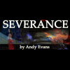
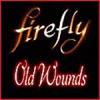

Badger's World, Volume 1It's a tough life being a henchman for Badger. Or at least, that's what Burt and Harry will tell you while sitting down to a quiet pint at Chen's Throat Emporium at the end of a long day's henching. |
This site is long dead. However, because we know that there are links on the internet which point here, we will continue to provide links to all the audio (and in one case, video), which used to be here, so that it can always be found.
|  |
SeveranceThe moon of Severance had one of the lowest crime rates in the known 'verse but all that was about to change... A new story based in Joss Whedon's universe of Firefly and Serenity featuring all new characters. |
Badger's World, Volume 1It's a tough life being a henchman for Badger. Or at least, that's what Burt and Harry will tell you while sitting down to a quiet pint at Chen's Throat Emporium at the end of a long day's henching. |
MoonshineName's Driskoll. Evelyn Driskoll. Private Eye. I work where the police won't go: the slums, the blackout zones, the shady underworlds of Osiris. Got an office down on Brock Street. You got a case, I'll take it. I don't work cheap but I get results. Don't ask how. |
BorderlineBorderline is a series of five-minute audio drama documentaries set in the universe of Joss Whedon's Firefly, documenting life on some of the Border and Rim worlds through the years of the Unification War ... from an Alliance point of view. |
|  |
Old WoundsThe production company Sonic Cinema is proud and very excited to bring you the first Firefly fan audio to hit the 'Verse. It's the season two that never was. |
Songs from the BlackA collection of songs inspired by Firefly and Serenity, previously podcasted on the Signal |
The River Tam Sessions (Video)River Tam is interviewed by an unnamed psychologist before and during her time at the Academy. Starring Summer Glau and Joss Whedon. |